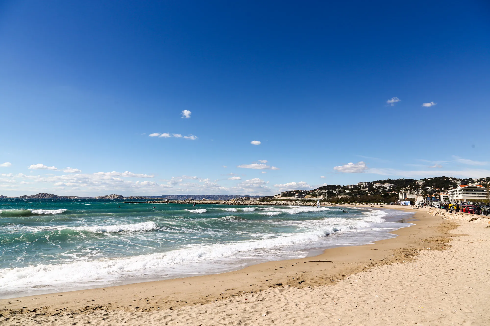

Les plus belles plages de Marseille
(Re) Découvrez où se baigner à Marseille. Voici 20 plages à Marseille
sympas, avec leurs moyens d’accès pour aller nager. Certaines plages ont seulement un
accès à la mer par des rochers et d’autres sont de véritables plages de sable. Des plages tranquilles,
d’autres sauvages. Voici nos plages pour se
baigner à Marseille.
Les plages de Corbière
Les trois plages de Corbière (la Lave, la Batterie et le Fortin) ont été aménagées au sud de l'Estaque,
en contrebas de la N568. Un chemin creusé dans la roche et des escaliers en permettent l'accès à pied.
Peu profondes en partie ombragées, elles sont de sable fin et de galets, équipées de poubelles,
sanitaires, douches, poste de secours. ( les consignes et les sanitaires sont ouverts de 9h30 à 18h45.)
Des bracelets pour prévention enfants perdus seront a disposition des baigneurs dans les consignes.
1. Plage du Fortin (galets)
568 Avenue du Rove 13016
Les jeux de ballon et la musique sont interdits. La plage est accessible aux familles et aux
poucettes.

2. Plage de la Lave (sable)
568 Avenue du Rove 13016
Il s'agit d'un Littoral avec plusieurs petites baies avec, l'eau turquoise et cristalline et
sable
fin pur et lumineux, donc il n'y a pas besoin de chaussures spéciales. l'entrée dans l'eau a une
netteté normale Cette plage convient à différentes catégories de personnes, voyageurs
solitaires,
amateurs de séjours détente et bien d'autres. Grand avantage, ce n'est pas un endroit bondé
pendant
la saison.
Toute la côte de Plage de la Lave est accessible à tous. Il est complètement sauvage et ne
dispose
d'aucune infrastructure. En plus de la baignade et des séances de bronzage, vous pouvez
également
participer à d'autres
activités. Un parking est
situé à proximité immédiate.
3. Plage de la Batterie (sable)
568 Avenue du Rove 13016
Cette charmante et discrète plage de la presqu’Ile de Malmousque est nichée dans une petite crique où
fut établie, à proximité, une batterie militaire dès 1757. La plage de la Batterie des Lions offre
une superbe vue sur la baie de Marseille au pied de la coquette Villa Jaune de la Petite Ourse. Pour
en profiter, levez-vous tôt, les places sont comptées !
 Revenir au Sommaire
Revenir au Sommaire
Les plages du Prado
Cap sur le 8ème arrondissement, aux célèbres plages du Prado. Les plages du Prado s’étendent sur
plusieurs kilomètres non loin de l’avenue du Prado, et du parc Borély. Elles sont facilement accessibles
en voiture, en vélo, en transports en commun ou à pied depuis les quartiers environnants. Chacune
d’entre elles a ses propres spécificités et son propre charme.
Elles offrent des équipements et des services pour rendre votre journée à la plage plus confortable. Vous
y trouverez des douches, des toilettes, des cabines de change et des casiers à louer. Des restaurants,
des bars et des glaciers sont également présents le long de la promenade. Elles sont très populaires
auprès des habitants et des touristes, en particulier pendant la période estivale. L’ambiance y est
animée et conviviale, avec des familles, des groupes d’amis et des amateurs de sports nautiques qui se
rassemblent pour profiter du soleil et de la mer.
4. Plage du Grand Roucas (Prado Nord)
108 Résidence Prado Plage 13008
La plage du Roucas-Blanc, également connue sous le nom de "Prado Nord", est une des relativement
nombreuses plages de Marseille. C'est une toute petite
plage, mais elle est vraiment très agréable. Elle se trouve entre le quartier d'Endoume et la plage
du
Prado, sur la Corniche du président du Kennedy.
5. Plage de David (Prado Sud)
Quartier du Prado, 13008
La "Plage de David" à Marseille, également connue sous le nom de "Prado Sud", est une plage située
sur la
côte méditerranéenne dans la ville de Marseille, en France. Cette plage est l'une des plages du
Prado,
une série de plages publiques bien connues à Marseille
Revenir au Sommaire
Nos autres plages sur Marseille
Les plages de Marseille, souvent caractérisées par leur sable fin et leurs eaux cristallines, attirent
autant les habitants que les visiteurs. L'ambiance décontractée des plages du Prado, la beauté
spectaculaire des calanques avec leurs falaises imposantes, et les petites criques cachées font partie
intégrante du charme méditerranéen de la ville. Certains endroits offrent également des possibilités
d'activités nautiques, tandis que d'autres sont des havres de paix propices à la détente au soleil.
Que l'on recherche l'effervescence urbaine des plages centrales ou la quiétude des criques isolées, les
plages de Marseille invitent à une exploration variée des plaisirs balnéaires. À chaque plage sa propre
atmosphère, mais toutes partagent le caractère unique de la Méditerranée qui fait de la côte
marseillaise une destination enchanteresse pour les amateurs de soleil, de mer et de paysages côtiers
exceptionnels.
6. Plage des Catalans (sable), à l'ouest du quartier du Pharo
14 Chemin du Génie, 13007
La plage des Catalans est sans nul doute la plus accessible de toutes, avec un accès direct depuis le
centre ville. Très populaire auprès des Marseillais et des voyageurs, cette dernière est située dans
le
quartier du Pharo, à deux pas du Vieux-Port.
7. Plage de Saint-Estève, dans la calanque homonyme, sur la côte
sud de
l'île Ratonneau dans les Îles du Frioul
14 Chemin du Génie, 13007
A l'abri du mistral et surveillée, la plage de St Estève offre un excellent dépaysement et permet aux
parents de laisser leurs enfants se délecter d'une eau claire, souvent chaude et dans laquelle ils
ont
pied pendant longtemps.
La plage de Saint Estève au Frioul est bordée de sable et de gros cailloux, baignée d'une eau
turquoise.
Les restaurants sur les quais de Port Frioul, accessibles à pied ou en petit train, snack.

8. Plage du Prophète
Elle est située sur la corniche Kennedy, entre le Vieux-Port et les plages du Prado (ou plages de
Gaston-Defferre), dans le 8ème arrondissement
La plage du Prophète est une petite plage naturelle de sable, aux eaux peu profondes, équipée d'une
buvette, de poubelles, de jeux pour enfants, d'un terrain de volley, poste de secours, sanitaires,
douches.

9. Plage de l'Huveaune (Épluchures Beach)
111 Av. Pierre Mendès France, 13008
C'est la seule plage de sable qui subsiste de l'ancienne configuration du littoral, avant la création
des
plages du Prado, de l'Escale Borely et de la Vieille Chapelle. Elle doit son nom au petit fleuve qui
se
jette juste à coté, l'Huveaune.

10. Plage Borély
Avenue Pierre Mendès France 13008
La plage Borély est faite de sable et de gravier. Longue de 260 mètres elle précède une promenade
pour
les piétons et les vélos. Elle accueille des snacks, restaurants, un poste de secours, des douches
et
WC, des jeux pour enfants, un terrain de volley.

11. Plage Bonneveine
Avenue Pierre Mendès France 13008
La plage de Bonneveine est sableuse, longue de 540 mètres, avec une zone délimitée pour la baignade
par
des balises jaunes. Elle est équipée d'un snack, poubelles, poste de secours, consignes, WC,
douches.Le
skatepark (bowl) se trouve à proximité.Accès avec le bus 19. Parking public. Un chenal est réservé
aux
kite-surfs.
12. Plage de La Vieille Chapelle
C'est la plage la plus au sud des plages du Prado, au bout de l'hippodrome Borély, avenue Pierre
Mendès
France.
La plage est dans une petite anse très agréable avec un peu de sable, des galets et sur l’extrémité
des
rochers. Autour on trouve de grandes pelouses ainsi qu’un grand skate park. On a également un accès
pour
les personnes à mobilité réduite (à la jonction avec la plage de Bonneveine).
13. Plage de la Pointe Rouge
avenue Pointe Rouge, 13008
C’est la plus grande plage de Marseille, constituée de sable, elle est protégée des vents et reçoit
un
public familial populaire. En bordure se trouvent de nombreux restaurants, bars, pubs qui assurent
le
ravitaillement et l’ambiance. En été, la surveillance de la baignade est également assurée.

14. Plage du Bain des Dames
36 Prom. du Grand Large, 13008
La plage du Bain des Dames de Marseille est la première plage avec des cabanons (anciens abris pour
les
pointus des pêcheurs). Ces derniers appartiennent à des propriétaires particuliers et sont
principalement utilisés pour des soirées en bord de plage.

15. Plage de l'Abricotier
36 Prom. du Grand Large, 13008
Cette petite plage de sable connue des Marseillais est aussi appelée l'Anse des sablettes.
Elle est discrète, très familiale et conviviale.
On y descend par des escaliers, la plage est plutôt étroite mais l'eau y est belle.
Le matin, l’ombre attire de nombreuses familles avec des enfants, et le soir venu les jeunes
marseillais
viennent y faire des soirées au clair de lune.
Il y a quelques fois trop de monde, mais cela reste un joli petit endroit pour se prélasser ou se
baigner.
Vous pourrez vous y baigner tranquillement en famille, et même profiter de l'ombre offerte par les
rochers pour vous reposer.

16. Plage de la Verrerie
Quartier de la Pointe Rouge, 8e arrondissement
La Plage de la Verrerie est connue pour son ambiance décontractée, son sable fin et son accès facile.
Elle offre une vue sur la mer Méditerranée et constitue un lieu apprécié des locaux et des visiteurs
pour se détendre au bord de l'eau.

17. Plage de la Maronnaise
Quartier des Goudes, 8e arrondissement
La plage de la Maronnaise aussi appelée "La Plage des Goudes" est réputée pour son ambiance
pittoresque
et authentique, entourée de collines et de criques rocheuses. Elle offre un cadre naturel préservé
avec
une vue spectaculaire sur la mer Méditerranée.
Revenir au Sommaire
Dans les calanque:
Le Parc National des Calanques est classé depuis 2012. Il est le 10ème parc national français, et le
premier parc national en Europe à la fois terrestre, marin, insulaire et périurbain. Entre Marseille et
La Ciotat, ce site grandiose à l‘équilibre fragile est composé de 5 000 hectares de paysages majestueux
et 20 kms de côtes aux portes de la deuxième plus grande ville de France.
Tous les lieux de baignade populaires du Parc national sont difficiles d’accès, de taille réduite et
surfréquentés en été. Vous n’y trouverez ni commerces, ni points d’eau, ni toilettes, ni poubelles.
18. Plage de Sormiou
Calanque de Sormiou, Marseille, France
Sormiou est l'une des calanques les plus célèbres de Marseille, appréciée pour sa beauté naturelle
préservée. En été, l'affluence peut être importante, et il peut être recommandé de venir tôt pour
trouver une place de parking et profiter de la plage de manière plus tranquille.
19. Plage de Morgiou
Calanque de Morgiou, Marseille, France
Morgiou est connue pour son authenticité et son atmosphère paisible. La calanque abrite également un
petit port de pêche traditionnel. Comme pour d'autres calanques, l'affluence peut augmenter en été.
20. Plage d'En Vau
Calanque d'En Vau, Marseille, France
En Vau est réputée pour son environnement naturel préservé et sa beauté sauvage. La plage est
entourée de hautes parois rocheuses, créant une atmosphère unique et impressionnante. Comme pour
d'autres calanques, il peut y avoir une forte affluence en été.
Revenir au Sommaire